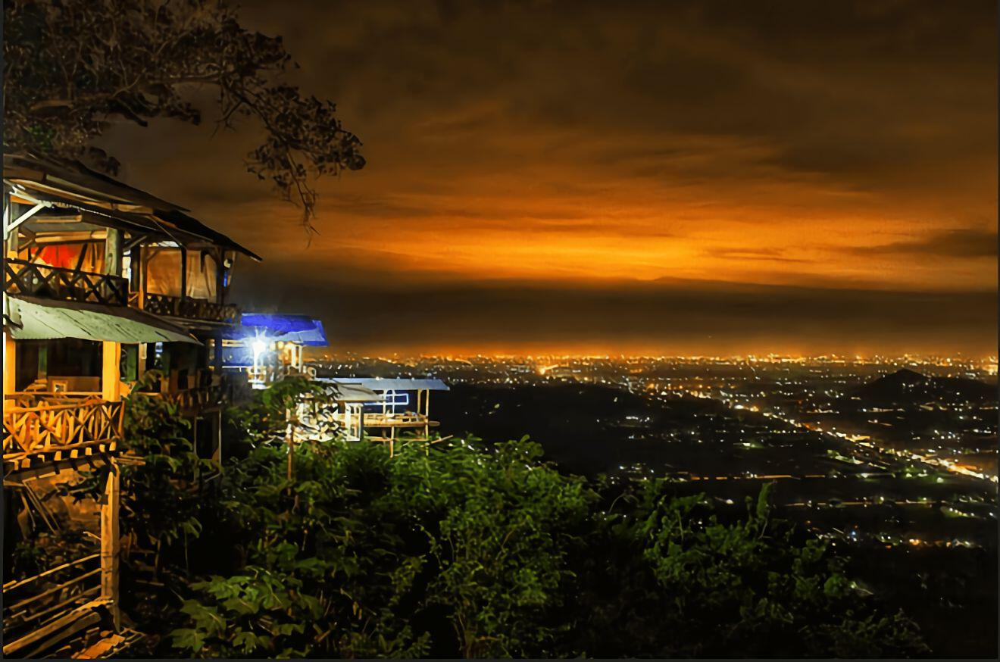

Selamat datang di Gunungkidul, surganya destinasi wisata yang menggoda! Terletak di Yogyakarta, Indonesia, Gunungkidul menawarkan keajaiban alam yang mempesona dan kekayaan budaya yang tak ternilai. Dari pantai indah seperti Pantai Baron hingga goa mistis seperti Goa Jomblang, setiap sudut Gunungkidul menyimpan keunikan tersendiri. Rasakan kehangatan keramahan lokal dan jangan lewatkan petualangan seru di kawasan ini. Selamat menikmati pesona Gunungkidul yang takkan terlupakan!
Pantai Baron
Pantai Baron di Gunungkidul, Yogyakarta, adalah destinasi pantai yang menawan. Pasir putih halusnya dipeluk oleh air laut biru kehijauan, menciptakan pemandangan yang memesona. Dikelilingi oleh tebing karst yang menjulang, pantai ini juga menawarkan petualangan menarik, seperti snorkeling dan menjelajahi goa-goa laut. Nikmati keindahan matahari terbenam yang memukau di ufuk barat Pantai Baron. Tempat ini tidak hanya memanjakan mata tetapi juga menyajikan ketenangan yang sulit dijelaskan dengan kata-kata. Jelajahi keajaiban Pantai Baron, di mana alam memperlihatkan pesonanya yang tak terlupakan.
Bukit Bintang
Bukit Bintang, sebuah surga tersembunyi di Gunungkidul, Yogyakarta, menawarkan pengalaman wisata yang mengesankan. Dari puncak bukit, Anda akan disambut oleh panorama yang menakjubkan, terutama saat matahari terbenam memberikan sentuhan magis pada langit dan tanah karst di sekitarnya.
Bukit Bintang bukan hanya destinasi untuk menikmati keindahan alam, tetapi juga merupakan tempat yang ideal untuk melihat langit penuh bintang di malam hari. Keheningan malam dipadukan dengan gemerlap bintang di langit menciptakan suasana romantis dan tenang.
Jalur trekking menuju Bukit Bintang menawarkan petualangan yang menyenangkan, memungkinkan Anda mengeksplorasi keindahan alam sepanjang perjalanan. Jangan lupa membawa kamera untuk menangkap momen-momen indah di sepanjang perjalanan Anda.
Bukit Bintang di Gunungkidul adalah tempat yang sempurna untuk melarikan diri dari hiruk-pikuk kehidupan sehari-hari, menikmati keindahan alam yang menenangkan, dan merasakan keajaiban langit di malam hari.
Goa Pindul

Goa Pindul, sebuah keajaiban bawah tanah di Gunungkidul, Yogyakarta, menawarkan petualangan unik yang tak terlupakan. Melintasi sungai yang tenang dengan menggunakan ban pelampung, Anda akan memasuki goa yang indah dengan stalaktit dan stalagmit yang memesona.
Perjalanan melalui Goa Pindul bukan hanya petualangan seru, tetapi juga memperkenalkan Anda pada keindahan alam bawah tanah yang menakjubkan. Cahaya alami yang menyelinap masuk melalui celah-celah di atas menciptakan suasana magis di dalam goa
Pemandu yang berpengalaman akan memberikan informasi menarik sepanjang perjalanan, menjadikan pengalaman ini tidak hanya petualangan fisik tetapi juga pengenalan terhadap keunikan geologi dan ekologi goa.
Goa Pindul adalah destinasi yang cocok bagi mereka yang mencari kombinasi petualangan dan keindahan alam bawah tanah. Jelajahi keajaiban goa ini, dan nikmati pengalaman seru yang menghidupkan rasa keingintahuan Anda
Air Terjun Sri Gethuk
Air Terjun Sri Gethuk, bersembunyi di keindahan alam Gunungkidul, menawarkan pesona yang memukau. Air jernih dari sungai Oyo membentuk air terjun yang indah, meluncur dari tebing karst yang tinggi. Suara gemericik air dan hawa segar di sekitar menciptakan atmosfer tenang yang menyegarkan.
Jalur menuju Air Terjun Sri Gethuk memperkenalkan Anda pada keindahan alam sekitar, dengan pemandangan tebing-tebing karst yang unik. Sesampainya di air terjun, Anda dapat menikmati keindahan alam sambil merasakan semilir angin yang menyegarkan.
Selain kecantikannya, Air Terjun Sri Gethuk juga menjadi tempat untuk berbagai kegiatan, seperti rafting di sungai Oyo yang menantang. Keunikan alam dan aktivitas petualangan membuat kunjungan ke Air Terjun Sri Gethuk menjadi pengalaman yang tak terlupakan di Gunungkidul.
HeHa Sky View
Heha Sky View, destinasi menakjubkan di Gunungkidul, Yogyakarta, mengajak Anda untuk merasakan pesona keindahan alam dari ketinggian. Terletak di dataran tinggi, Heha Sky View menawarkan panorama yang memukau, dengan perpaduan bukit hijau, langit biru, dan hamparan sawah yang luas.
Dengan kehadiran spot-spot fotogenik, Heha Sky View menjadi tempat yang ideal untuk menikmati matahari terbenam yang spektakuler. Suasana tenang dan udara segar di atas bukit menciptakan pengalaman yang menenangkan dan menyegarkan.
Selain keindahan alamnya, Heha Sky View juga menawarkan berbagai kegiatan seru, seperti flying fox dan trekking. Aktivitas ini memberikan sentuhan petualangan yang melengkapi pengalaman wisata Anda di tempat ini.
Heha Sky View adalah destinasi yang cocok untuk melepaskan penat, menikmati pemandangan yang menakjubkan, dan menciptakan kenangan indah. Rasakan keindahan alam dari ketinggian di Heha Sky View, di mana langit biru bertemu dengan hijaunya alam Gunungkidul.